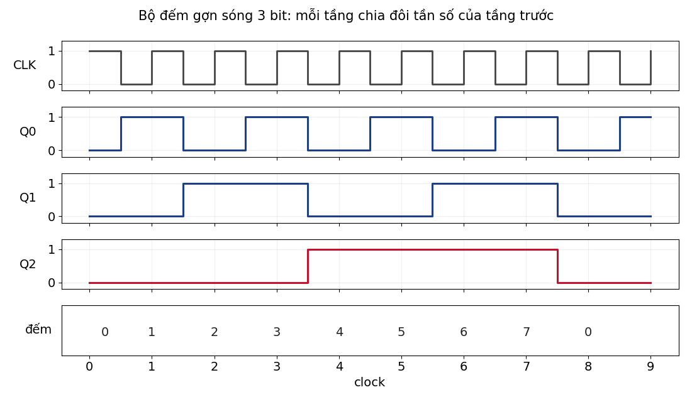

11. Mạch tuần tự: latch, flip-flop, thanh ghi dịch, bộ đếm, logic khả trình
Cách một mạch nhớ được trạng thái: chốt và flip-flop, mạch một nhịp và 555, thanh ghi dịch, bộ đếm và máy trạng thái, logic khả trình PAL, CPLD, FPGA. Dựng từ Floyd Chương 7 đến 10 (không có slide của giảng viên).
CO/CLO: ngoài CO/CLO nêukhông có slide của giảng viên (dựng từ sách)Câu hỏi: 177 (102 gốc)
Không có slide của giảng viên cho mục này (dựng từ sách) · Tooley §5.6-5.8 (monostable, bistable, họ logic) · Floyd Ch.7 (PDF tr.388), Ch.8 (450), Ch.9 (498), Ch.10 (562) · Bản đồ nội dung sách
Sau module này bạn sẽ
phân biệt chốt và flip-flop kích sườn, viết bảng chân trị S-R, D, J-K, T
tính độ rộng xung của mạch một nhịp và tần số, chu kỳ làm việc của 555 dao động
suy ra nội dung thanh ghi dịch, chuỗi bộ đếm vòng và Johnson, và thời gian trễ N/f
xác định số flip-flop, modulus, tần số ra và trễ tích luỹ của bộ đếm gợn sóng, đồng bộ và mắc tầng
phân biệt PAL, GAL, CPLD, FPGA và mô tả luồng thiết kế và quét biên JTAG
Chốt và flip-flop là phần tử nhớ hai trạng thái bền, khác nhau ở cách bắt thời điểm đổi trạng thái
Chốt S-R và chốt D có cổng
Flip-flop D, J-K, T kích sườn
Preset, clear và các thông số thời gian
Chốt đổi trạng thái theo mức, flip-flop đổi theo sườn của xung clock
Cả hai là thiết bị lưỡng bền (bistable): có hai trạng thái bền, SET (Q = 1) và RESET (Q = 0). Chốt phản ứng với ngõ vào của nó (không đồng bộ) hoặc trong lúc ngõ vào cho phép EN còn tích cực; flip-flop kích sườn chỉ lấy ngõ vào tại sườn lên hoặc sườn xuống của xung clock (đồng bộ). Floyd 7-1, 7-2.
Thiết bị
Khi nào đổi trạng thái
Ngõ vào điều khiển
Chốt S-R
ngay khi S hoặc R đổi (không đồng bộ)
S, R
Chốt D có cổng
trong lúc EN tích cực
D, EN
Flip-flop kích sườn
chỉ tại sườn tích cực của clock
D hoặc J, K, T, và clock
📖 Giải thích cho người mới bắt đầu
Chốt giống công tắc bấm giữ: đèn đổi ngay khi bạn bấm. Flip-flop giống máy ảnh chỉ chụp đúng lúc đèn flash nháy (sườn clock): giữa hai lần chụp, ngõ vào đổi gì cũng không ảnh hưởng.
Chốt S-R gồm hai cổng NOR hoặc NAND nối chéo; bật đồng thời cả hai ngõ vào tích cực là trạng thái cấm
Hồi tiếp chéo giữ lại trạng thái: ngõ ra mỗi cổng là một ngõ vào của cổng kia. Với hai cổng NOR ngõ vào tích cực ở mức CAO; với hai cổng NAND ở mức THẤP (Floyd 7-1).
NOR: S
R
Q
Ý nghĩa
0
0
giữ nguyên
nhớ
1
0
1
SET
0
1
0
RESET
1
1
Q = Q̅ = 0
cấm
NAND: S
R
Q
Ý nghĩa
1
1
giữ nguyên
nhớ
0
1
1
SET
1
0
0
RESET
0
0
Q = Q̅ = 1
cấm
📖 Giải thích cho người mới bắt đầu
Trạng thái cấm làm cả hai ngõ ra bằng nhau, nghĩa là Q và Q̅ không còn là phần bù của nhau; khi nhả cả hai ngõ vào cùng lúc, kết quả không đoán trước được. Site đã kiểm cả hai bảng bằng cách mô phỏng cổng lặp tới khi ổn định.
Chốt D có cổng cho Q theo D khi EN = 1 và giữ nguyên khi EN = 0
Thêm cổng EN vào chốt S-R và nối $S=D$, $R=\overline{D}$ thì không thể xảy ra trạng thái cấm (Floyd 7-1).
EN
D
Q kế tiếp
Ý nghĩa
0
x
Q
giữ nguyên
1
0
0
RESET
1
1
1
SET
Chốt D là phần tử nhớ 1 bit đơn giản nhất: ngõ vào dữ liệu D, ngõ vào cho phép EN (còn gọi là chốt cổng, bộ nhớ đệm).
📖 Giải thích cho người mới bắt đầu
Khi EN = 1 chốt "trong suốt": D đổi bao nhiêu lần thì Q đổi theo bấy nhiêu lần. Muốn chốt đúng một giá trị tại một thời điểm phải dùng flip-flop kích sườn.
Flip-flop D, J-K và T chỉ đổi trạng thái tại sườn clock; J-K có đủ bốn chế độ
Flip-flop D: $Q^+=D$ tại sườn tích cực. Flip-flop J-K (Floyd 7-2):
J
K
Q kế tiếp
Chế độ
0
0
Q
không đổi
0
1
0
RESET
1
0
1
SET
1
1
Q̅
lật (toggle)
Phương trình đặc trưng
$$Q^{+}=J\overline{Q}+\overline{K}\,Q$$
Flip-flop T lật khi $T=1$: $Q^+=Q\oplus T$; nối J = K = T là được.
📖 Giải thích cho người mới bắt đầu
J = K = 1 làm Q đổi ở mọi sườn nên chu kỳ ngõ ra gấp đôi chu kỳ clock: đó là cơ sở của mạch chia tần số và bộ đếm. Site kiểm phương trình đặc trưng khớp bảng J-K cho cả 8 tổ hợp (J, K, Q).
Preset và clear không đồng bộ ghi đè clock; thời gian thiết lập, giữ và trễ lan truyền giới hạn tốc độ
PRE đặt Q = 1 và CLR đặt Q = 0 bất kể clock (trên nhiều IC chúng tích cực mức THẤP).
Thời gian thiết lập $t_s$: ngõ vào phải ổn định trước sườn clock; thời gian giữ $t_h$: phải còn ổn định sau sườn.
Trễ lan truyền $t_{PLH}$, $t_{PHL}$: từ sườn clock tới lúc ngõ ra đổi.
Còn có tần số clock lớn nhất, độ rộng xung clock tối thiểu và công suất tiêu thụ (Floyd 7-3).
Ví dụ minh hoạ (số giả định, không phải của IC cụ thể): $t_s=20$ ns và $t_h=5$ ns nghĩa là D không được đổi trong vùng rộng $20+5=25$ ns quanh sườn clock.
📖 Giải thích cho người mới bắt đầu
Nếu D đổi trong vùng cấm, flip-flop có thể rơi vào trạng thái trung gian không xác định (mất ổn định). Đó là lý do mọi thiết kế đồng bộ phải đảm bảo thiết lập và giữ.
PHẦN 2/5
02
Flip-flop dùng để chứa, chia tần số và đếm; mạch một nhịp và 555 tạo xung và dao động theo RC
Chứa song song, chia tần số, đếm
Mạch một nhịp 74121
Bộ định thời 555: một nhịp và dao động
Flip-flop có ba ứng dụng cốt lõi: chứa dữ liệu song song, chia tần số và đếm
(1) Chứa song song: n flip-flop D dùng chung clock chứa n bit. (2) Chia tần số: mỗi flip-flop J-K ở chế độ lật chia đôi tần số. (3) Đếm: n flip-flop đếm tới $2^n$ trạng thái (Floyd 7-4).
Số FF n
Tần số ra
Số trạng thái
1
f / 2
2
2
f / 4
4
3
f / 8
8
4
f / 16
16
5
f / 32
32
📖 Giải thích cho người mới bắt đầu
Ví dụ: tinh thể thạch anh 32 768 Hz qua 15 tầng chia đôi cho đúng 1 Hz vì $32\,768=2^{15}$ (đồng hồ đeo tay).
Mạch một nhịp (one-shot) tạo một xung có độ rộng đặt bởi RC khi được kích
Mạch một nhịp là đa hài đơn ổn (monostable): một trạng thái bền, kích thì ra xung rộng $t_W$ rồi tự về. Loại không kích lại bỏ qua xung kích mới trong lúc đang định thời; loại kích lại được thì làm lại thời gian (Floyd 7-5).
74121 (không kích lại)
$$t_W=0{,}7\,R\,C_{EXT}$$
Rđiện trở ngoài hoặc điện trở trong 2 kΩ
C_{EXT}tụ ngoài
Ví dụ: dùng điện trở trong 2 kΩ và muốn $t_W=10$ μs thì $C=10\,\mu s/(0{,}7\times2000)=7143$ pF.
📖 Giải thích cho người mới bắt đầu
Chú ý: hệ số 0,7 chính là $\ln 2\approx0{,}693$, thời gian để tụ nạp tới nửa mức. Site tính cả hai cách và chúng khớp trong 1 %. Con số 7143 pF trùng với đáp án Floyd 7-11.
Bộ định thời 555 làm mạch một nhịp ($t_W=1{,}1RC$) hoặc mạch dao động có chu kỳ làm việc trên 50 %
Một nhịp: $t_W=1{,}1\,R_1C_1$; ví dụ Floyd: $R_1=2{,}2$ kΩ, $C_1=0{,}01$ μF cho $t_W=24{,}2$ μs. Dao động (astable), tụ nạp qua $R_1+R_2$ và xả qua $R_2$:
tự vẽ theo công thức Floyd 7-6; R1 = 1 kΩ, R2 = 2 kΩ, C = 0,1 μF cho T = 0,35 ms📖 Giải thích cho người mới bắt đầu
Duty cycle luôn lớn hơn 50 % vì $R_1+R_2>R_2$. Muốn dưới 50 % mắc diode qua $R_2$ (Floyd Hình 7-59). Với số liệu trên, tần số công thức 1,44 cho 2 880 Hz còn $1/T$ với 0,7 cho 2 857 Hz: sai khác 0,8 % do làm tròn $1/0{,}693\approx1{,}44$.
PHẦN 3/5
03
Thanh ghi dịch chuyển bit qua một dãy flip-flop và cho ra bộ đếm vòng, bộ đếm Johnson, đường trễ
Bốn kiểu vào/ra dữ liệu
Bộ đếm vòng và Johnson
Ứng dụng: trễ, chuyển song song nối tiếp
Thanh ghi dịch có bốn kiểu vào/ra và nạp song song xong trong một xung, nạp nối tiếp mất n xung
Thanh ghi lưu và dịch chuyển dữ liệu (Floyd 8-1, 8-2). Bốn kiểu: vào nối tiếp/ra nối tiếp (SISO), vào nối tiếp/ra song song (SIPO), vào song song/ra nối tiếp (PISO), vào song song/ra song song (PIPO).
Kiểu
Nhập dữ liệu
Lấy dữ liệu ra
Dùng làm
SISO
n xung
n xung
đường trễ
SIPO
n xung
tức thì
nối tiếp sang song song
PISO
1 xung
n xung
song song sang nối tiếp
PIPO
1 xung
tức thì
thanh ghi lưu
Thời gian nhập nối tiếp $N$ bit là $N\times T_{clk}=N/f$.
📖 Giải thích cho người mới bắt đầu
Ví dụ Floyd: clock 100 kHz nhập 8 bit mất $8\times10\,\mu s=80\,\mu s$. Nhập song song 8 bit chỉ cần một xung, trễ bằng trễ lan truyền của một flip-flop.
Nối ngõ ra cuối về ngõ vào cho bộ đếm vòng (modulus n) và nối qua đảo cho bộ đếm Johnson (modulus 2n)
Hai bộ đếm thanh ghi dịch (Floyd 8-4) có chuỗi trạng thái quy định, bắt đầu từ 1000 (vòng) và 0000 (Johnson), dịch phải:
Bộ đếm Johnson dùng ít flip-flop hơn một nửa so với bộ đếm vòng cùng modulus, và mỗi trạng thái giải mã bằng một cổng AND hai ngõ vào.
📖 Giải thích cho người mới bắt đầu
Bộ đếm vòng modulus 8 cần 8 flip-flop, bộ đếm Johnson modulus 8 chỉ cần 4: đúng với đáp án Floyd Self-Test 7, 8 chương 8. Số trạng thái dùng được của Johnson là $2n$ trong tổng $2^n$ có thể.
Thanh ghi dịch làm đường trễ với trễ $N/f$ và đổi dữ liệu song song thành nối tiếp
(Floyd 8-5.) Một thanh ghi SISO $N$ bit trễ tín hiệu đúng $N$ chu kỳ clock. Muốn trễ $t$ thì cần tần số clock $f=N/t$.
Ví dụ Floyd Self-Test 9: 8 bit, trễ 24 μs cần $f=8/24\,\mu s=333$ kHz. Truyền dữ liệu nối tiếp giữa hai máy cũng dùng PISO ở bên gửi và SIPO ở bên nhận (nối tiếp ↔ song song).
📖 Giải thích cho người mới bắt đầu
Đây là ý tưởng của đường truyền nối tiếp trên tàu bay (Module 05): cả hai đầu cần clock hoặc tốc độ bit thống nhất. Site tính 333,3 kHz bằng hai cách (chia và nghịch đảo): khớp.
PHẦN 4/5
04
Bộ đếm là máy trạng thái: gợn sóng thì đơn giản nhưng chậm, đồng bộ thì nhanh nhưng cần logic điều khiển
Máy trạng thái Moore và Mealy
Bộ đếm không đồng bộ (gợn sóng)
Bộ đếm đồng bộ và lên/xuống
Bộ đếm cắt cụt, mắc tầng, giải mã
Bộ đếm là máy trạng thái hữu hạn; modulus là số trạng thái thực sự của chuỗi
Máy trạng thái là mạch tuần tự có số trạng thái hữu hạn theo thứ tự quy định (Floyd 9-1). Moore: ngõ ra chỉ phụ thuộc trạng thái hiện tại. Mealy: ngõ ra phụ thuộc trạng thái hiện tại và ngõ vào. Cả hai gồm logic tổ hợp và bộ nhớ (flip-flop), clock không tính là ngõ vào điều khiển.
Moore
Mealy
Ngõ ra phụ thuộc
trạng thái hiện tại
trạng thái hiện tại và ngõ vào
Ví dụ
bộ đếm có modulus cố định
đếm 25, 50 hoặc 100 viên (đóng chai) theo ngõ chọn modulus
📖 Giải thích cho người mới bắt đầu
Chú ý: khoá in của Floyd Self-Test 2 chương 9 ghi "(a) ngõ vào", chỉ một nửa định nghĩa Mealy; site dùng "(d) ngõ vào và trạng thái hiện tại" theo đúng văn bản mục 9-1.
Bộ đếm gợn sóng: mỗi tầng lật khi tầng trước đổi từ 1 xuống 0, nên trễ cộng dồn $n\times t_{pd}$
Bộ đếm không đồng bộ (gợn sóng) cho flip-flop sau nhận clock từ ngõ ra Q của flip-flop trước (Floyd 9-2). Modulus tối đa $2^n$. Trễ tích luỹ phải nhỏ hơn chu kỳ clock.
Tần số clock tối đa
$$f_{max}\approx\frac{1}{n\,t_{pd}}$$

tự vẽ lại theo ý Floyd 9-2; trễ lan truyền được bỏ qua
Ví dụ Floyd Self-Test 10: 4 flip-flop, mỗi cái 12 ns: quay từ 1111 về 0000 mất $4\times12=48$ ns.
📖 Giải thích cho người mới bắt đầu
Trong lúc các tầng đang lật nối đuôi nhau, ngõ ra tạm thời cho các mã sai (ví dụ 0111 → 0110 → 0100 → 0000 khi đổi từ 0111 sang 1000 qua các bước trung gian): đó là lý do phải cẩn thận khi giải mã ngõ ra của bộ đếm gợn sóng.
Bộ đếm đồng bộ cho mọi flip-flop dùng chung clock nên nhanh hơn; điều khiển bằng cổng AND vào J và K
(Floyd 9-3, 9-4, 9-5.) Mọi flip-flop nhận cùng một clock; flip-flop thứ $k$ chỉ lật khi mọi bit thấp hơn bằng 1 (J = K = tích các Q thấp hơn). Bộ đếm lên/xuống đổi chiều bằng một ngõ vào điều khiển UP/DOWN. Thiết kế: sơ đồ trạng thái → bảng trạng thái kế → bảng kích J-K → tối giản bằng K-map → mạch.
Q → Q kế
J
K
0 → 0
0
x
0 → 1
1
x
1 → 0
x
1
1 → 1
x
0
📖 Giải thích cho người mới bắt đầu
Bảng kích J-K suy ra từ bảng J-K: để đi từ 0 lên 1 cần J = 1 còn K tuỳ ý (đặt hoặc lật đều được), v.v. Site kiểm bảng này bằng chương trình cho cả bốn chuyển trạng thái.
Bộ đếm cắt cụt có modulus không phải lũy thừa của 2; mắc tầng thì modulus nhân với nhau
Bộ đếm cắt cụt bỏ bớt trạng thái. Bộ đếm BCD (decade) đếm 0000 đến 1001 (mười trạng thái) và quay về 0000; bộ đếm gợn sóng làm điều này bằng cách giải mã 1010 để reset không đồng bộ (Floyd 9-2). Cần $n=\lceil\log_2 N\rceil$ flip-flop cho modulus $N$. Mắc tầng: modulus tổng là tích, tần số ra là $f/\prod N_i$ (Floyd 9-6).
Chia tần số mắc tầng
$$f_{out}=\frac{f_{clk}}{N_1N_2\cdots N_k}$$
Ví dụ Floyd Self-Test 14: 10 MHz với các tầng 5, 8, 10, 10 cho $10\text{ MHz}/4000=2{,}5$ kHz. Giải mã trạng thái (Floyd 9-7) có thể sinh gai (glitch) ngắn ở bộ đếm gợn sóng.
📖 Giải thích cho người mới bắt đầu
Bộ đếm modulus 13 đếm 0 đến 12: nó cần 4 flip-flop vì $2^3=8<13\le16$, và khởi đầu từ 0000 (Floyd Self-Test 16). Bộ đếm modulus 60 của đồng hồ là chuỗi mod 10 rồi mod 6.
PHẦN 5/5
05
Logic khả trình biến một con chip thành mạch tuỳ ý: từ PAL đơn giản đến CPLD và FPGA, nạp bằng phần mềm
SPLD: PAL, PLA, GAL
CPLD và FPGA
Luồng thiết kế và quét biên JTAG
SPLD thực hiện tổng các tích (SOP): PAL có mảng AND lập trình được và mảng OR cố định
(Floyd 10-1.) Mọi hàm Boolean viết được dạng SOP nên chỉ cần mảng AND rồi OR. Ba kiểu SPLD:
Thiết bị
Mảng AND
Mảng OR
Ghi chú
PAL
lập trình được
cố định
lập trình một lần (cầu chì)
PLA
lập trình được
lập trình được
linh hoạt hơn PAL
GAL
lập trình được
cố định
xoá và lập trình lại được, có macrocell ngõ ra
Ví dụ: XOR $F=\overline{A}B+A\overline{B}$ dùng hai số hạng tích; PAL giữ lại đúng bốn liên kết (hai cho mỗi số hạng) và đốt các cầu chì còn lại.
📖 Giải thích cho người mới bắt đầu
Khoá in của Floyd Đúng/Sai 1 chương 10 bắt bẻ đúng điều này: "PAL có mảng OR lập trình được nối với mảng AND cố định" là SAI (ngược lại).
CPLD ghép nhiều khối LAB qua mảng nối PIA; FPGA gồm khối logic CLB và khối I/O với mật độ lớn hơn nhiều
CPLD (Floyd 10-2, 10-3): nhiều khối LAB (mỗi khối xấp xỉ một SPLD) nối qua PIA; mỗi LAB gồm các macrocell: mảng AND-OR, bộ dồn kênh chọn chế độ (tổ hợp hoặc có thanh ghi) và flip-flop D hoặc J-K lập trình được. Biến thể LUT-CPLD dùng bảng tra thay mảng AND-OR. FPGA (Floyd 10-4): các CLB, khối I/O và đường nối lập trình được; kiểu SRAM mất cấu hình khi tắt nguồn, kiểu antifuse thì không. Khối đơn giản và nhiều thì gọi là hạt mịn (fine grained).
📖 Giải thích cho người mới bắt đầu
Một LUT $n$ ngõ vào lưu $2^n$ bit và thực hiện được $2^{2^n}$ hàm: LUT 4 ngõ vào là 16 bit và 65 536 hàm. Sách ghi mật độ FPGA lớn hơn CPLD; khoá in Đúng/Sai 7 ghi sai "LAB không có trong CPLD" nên site dùng "có".
Luồng thiết kế đi từ nhập thiết kế qua tổng hợp, mô phỏng đến nạp; JTAG dùng bốn chân TDI, TDO, TCK, TMS
(Floyd 10-5, 10-6.) Luồng thiết kế (design flow): nhập thiết kế (sơ đồ nguyên lý hoặc HDL) → tổng hợp ra netlist (định dạng EDIF) → mô phỏng chức năng (người dùng đặt dạng sóng ngõ vào) → đặt và đi dây cho thiết bị đích → mô phỏng thời gian → nạp tệp lập trình. Quét biên (boundary scan, JTAG) kiểm tra mạch in qua cổng truy cập kiểm tra (TAP) với bốn tín hiệu: TDI (dữ liệu vào), TDO (dữ liệu ra), TCK (clock), TMS (chọn chế độ); mô tả bằng ngôn ngữ BSDL.
📖 Giải thích cho người mới bắt đầu
Ngôn ngữ mô tả phần cứng (HDL) là chủ đề của Module 14 (VHDL, Tooley Chương 17). Ở đây chỉ cần nhớ HDL là một trong hai cách nhập thiết kế.
Module không có slide của giảng viên. Floyd Chương 7 (PDF tr.388, chốt, flip-flop, one-shot, 555), Chương 8 (tr.450, thanh ghi dịch), Chương 9 (tr.498, bộ đếm), Chương 10 (tr.562, logic khả trình). Câu hỏi gốc là Đúng/Sai và Self-Test của bốn chương, khoá in ở trang 448, 495, 560, 626. Tooley 5.6 đến 5.8 (monostable, bistable, họ logic) đã nằm trong Module 02. Không có phần nào của Tooley hay slide nêu microcontroller.
Khoá in của Floyd lệch so với chính văn bản (site dùng đáp án theo văn bản)
Chương 9 Self-Test 2: khoá (a) "ngõ vào"; mục 9-1 nói ngõ ra Mealy phụ thuộc cả trạng thái hiện tại và ngõ vào, nên dùng (d).
Chương 10 Đúng/Sai 7: khoá F cho "LAB có trong CPLD"; mục 10-2 định nghĩa LAB là khối của CPLD, nên đáp án là Đúng.
Chương 10 Self-Test 9: khoá (b) "cổng và thanh ghi dịch"; mục 10-2 mô tả macrocell gồm cổng, bộ dồn kênh và flip-flop, nên dùng (a).
Chương 8 Self-Test 10 không được đưa vào ngân hàng vì cần Hình 8-36 chưa kiểm. Chương 10 Đúng/Sai 5 in nhầm "FGPA".
Lớp chữ PDF của Chương 8 đọc micro giây (μs) thành "ms" ở Self-Test 5, 6, 9; ảnh trang cho thấy đơn vị đúng là μs.
Floyd Chương 9 Self-Test 2: khoá in (a) "ngõ vào"; mục 9-1 viết ngõ ra của máy Mealy phụ thuộc cả trạng thái hiện tại và ngõ vào, nên đáp án (d) "(a) và (c)". Site dùng (d).
Floyd Chương 10 Đúng/Sai 7: khoá in F cho "LAB có trong CPLD"; mục 10-2 gọi mỗi mảng SPLD trong CPLD là LAB. Site dùng Đúng.
Floyd Chương 10 Self-Test 9: khoá in (b) "các cổng và một thanh ghi dịch"; mục 10-2 mô tả macrocell gồm mảng AND-OR, bộ dồn kênh và flip-flop. Site dùng (a).
Floyd Chương 8 Self-Test 5, 6, 9: lớp chữ PDF đọc micro giây (μs) thành "ms"; ảnh trang cho thấy đơn vị là μs (80 μs, 8 μs, 1 μs, 24 μs).
Floyd Chương 10 Đúng/Sai 5 in "FGPA" thay cho FPGA (lỗi in).
Hệ số 1,44 của 555 dao động là 1/0,693 làm tròn: với R1 = 1 kΩ, R2 = 2 kΩ, C = 0,1 μF công thức cho 2 880 Hz còn 1/T = 2 857 Hz (lệch 0,8 %). Site dùng công thức Floyd cho tần số và 0,7 cho thời gian.
Floyd Chương 8 Self-Test 10 (Hình 8-36) đã đọc từ ảnh trang: khoá in (c) khớp văn bản mục 8-5 (bit 0 được dịch vòng, mức THẤP lần lượt vào từng hàng).